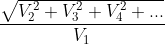
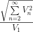
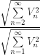

The distortion analyzer computes the total harmonic distortion (THD) and total harmonic distortion and noise (THD+N) using time series data collected by the Fluke 8588A Digitizer.
The Fluke 8588A digitizer is used to capture the raw data and an FFT is computed and the results of the truncated spectrum plotted. Unlike in most analyzer where you specify the number of samples or the sampling frequency, the Distortion Analyzer GUI can specify either a relative or absolute mainlobe width.
In the image below, an absolute 100 Hz mainlobe width was chosen, which means each peak main-lobe will have a frequency resolution of 100 Hz. On the other hand, a relative mainlobe width ensures the mainlobe width scales with the fundamental freuqency. So if you specify a relative MLW of 0.1 (units of MLW/Hz), the width operating at 1 kHz is 100Hz. At 5 kHz it's 500Hz. Relative MLW is best for computing a consistent (and comparable) total harmonic distortion value. However, an absolute MLW is best for RMS measurements.
The interface was written in Python and the GUI developed with wxPython, which is a derivative of the wxWidgets library in C++.
At a top level, pyVISA creates the remote connection
Both the distortion analyzer and multimeter are capable of single or swept measurements using a breakpoint list.
Depending on the instruments selected from the dropdown in the main interface, opening the instrument configuration window will provide the current remote configuration for the available instruments selected. Here the 5560A and the 8588A were selected and we can edit their connection over Socket (ethernet), GPIB, or RS-232.
Time series data is retrieved by the Fluke 8588A digitizer. The digitizer has a fixed sampling frequency of 5MHz, which depending on the frequency of interest, could be considered excessive and drive up the number of samples required to appropriately window the time series data. Consequently, specifying an aperture length is a way of setting an equivalent sampling frequency lower than 5MHz. The aperture is the duration after each trigger where samples at a rate of 5 MHz are averaged together.
Calculating the appropriate sample length, sampling frequency, and the aperture length requires some understanding of windowing that will be discussed in Sections B and E in greater detail.
First the sampling frequency, Fs, is computed by selecting a frequency 100x larger than the fundamental (or frequency of interest). Note, an Fs of at least 10x larger than the frequency of interest tends to be a general rule of thumb. If the computed Fs is not equal to or larger than twice the specificed bandwidth for the given measurement, then twice the measurement bandwidth is chosen by default. However, this value of Fs may not be its final value since we still need to have an integer number of samples averaged per measurement by the digitizer to resolve this sampling frequency. Consequently, the sampling frequency is calculated twice: once more after calculating an integer number of samples to average by the digitizer.
# The digitizer's sampling frequency
DIGITIZER_SAMPLING_FREQUENCY = 5e6
# Ideal sampling frequency
_Fs = max(2 * bw, 100 * f0)
# An integer number of samples averaged per measurement determines actual sampling frequency
samples_to_average = max(round(DIGITIZER_SAMPLING_FREQUENCY / _Fs), 1)
Fs = DIGITIZER_SAMPLING_FREQUENCY / samples_to_average
samples_to_average = 25 # number of samples collected at digitizing frequency before being averaged
Fs = 200000 # sampling frequencyNext, the sample length, N, is computed by finding the window length of the measurement. An error is expressed since the main lobe width is directly proportional to the number of cycles captured. The minimum value of N correlates to the lowest detectable frequency by the windowing function. For instance, blackman requires a minimum of 6 period cycles of the frequency of interest in order to express content of that lobe in the DFT. Sampling frequency does not play a role in the width of the lobe, only the resolution of the lobe.
In this example, an error of 10% is specified. For a 1kHz fundamental, the main lobe width will maximally be 100Hz, the lowest detectable frequency, ldf.
error = 0.1 # 10%
ldf = f0 * error # lowest detectable frequency by FFT
M = int(6 * (fs / ldf)) # samples required for window
ldf = 100 # Hz
M = 12000 # number of samplesFinally, the aperture is calculated. For this discussion, however, this won't be covered. Please review Section F to better understand how to compute the aperture provided the sampling frequency, Fs.
The FFT of discrete time series data (DFT) requires an integer number of cycles, otherwise, spectral leakage occurs in the form of additional artificial spectral content. Since an FFT assumes an infinite data series capable of looping back on itself, a non integer number of cycles (periods) creates a discontinuity between the first and last sample and so false harmonics are observed.
A windowing function aims to mitigate the spectral error associated with data discontinuity by tapering the head and tail of the data series to attenuate the effect of the discontinuity. In this example, a blackman window was selected since it has greater side lobe attenuation at the cost of wider main lobe width. However, the main lobe width is equal to 6/N. That is, at least 6 cycles of the frequency of interest is required to resolve at least the frequency of interest and nothing lower. By increasing the sample length, additional cycles are captured, which help reduce the main lobe error width. Additional information on windowing can be found in section E further down on this page.
Increasing the length of M for a given sampling frequency reduces the width of the main lobe. In other words, in situations where zero padding is not involved and M=N, the main lobe width is reduced by increasing the number of samples for a given sampling frequency.
The time series data is then multiplied by the window (or convolved in the frequency domain). Tapering at the head and tail of the time series data is observed.
The FFT of the time series data with windowing applied is presented below. The fundamental at 1kHz and two odd order harmonics are resolved by the FFT.
Sampling Theorem
While the FFT returns spectral content with equal length N to the time series data, the content is composed of complex conjugate pairs. Consequently, the FFT only resolves unique-valued spectral content up to only approximately half the length of N. As per Nyquist's sampling theorem, the FFT can only resolve spectral content up to half the sampling frequency.
Amplitude Correction
Since each point of the FFT transform is the result of a sum over a certain time interval of the time-series data, the FFT must also be divided by the length of the FFT to appropriately recover the amplitude. In addition, since we applied a windowing function to the original data, the amplitude of the the time series data must be recovered from the FFT by applying an amplitude correction factor to compensate for the weighting.
import numpy as np
Fs = 200000 # sampling frequency
N = 12000 # samples collected in measurement
w = np.blackman(N)
amplitude_correction_factor = 1/mean(w)
main_lobe_width = 6 * (Fs / N)
# The one-dimensional discrete Fourier Transform
ytw = yt * w
yf_fft = (np.fft.fft(ytw)) * amplitude_correction_factor
# Calculate length of FFT
if (N % 2) == 0:
# for even values of N: FFT length is (N / 2) + 1
fft_length = int(N / 2) + 1
else:
# for odd values of N: FFT length is (N + 1) / 2
fft_length = int((N + 2) / 2)
# The one-dimensional discrete Fourier Transform for real input.
yf_rfft = yf_fft[:fft_length]Parseval's theorem
Parseval's Theorem states for discretized signals the total energy of a signal is preserved under the Fourier transform, such that:
Thus, the total RMS amplitude for the FFT is:
import numpy as np
import math
def rms(y)
sqr = np.absolute(y) ** 2
mean = math.fsum(sqr) / len(sqr) # computed from partial sums
rms = np.sqrt(mean)
return rmsThere are three methods for computing Total Harmonic Distortion we will discuss:
| Method | Short Description (Compares...) | Expression |
|---|---|---|
| THD | harmonic peaks : fundamental peak |  |
| THD_F | harmonic content : fundamental lobe |  |
| THD_R | harmonic content : entire RMS signal |  |
| THD: | the most basic concept for computing total harmonic distortion. Here only the peaks are compared. Noise (except where superimposed onto the peaks) is rejected. It's an imprecise calculation where typically the amplitude of each of the harmonic frequencies is recorded. |
| THD_F: | compares the harmonic content of a waveform to its fundamental and is a much better measure of harmonics content than THDR. Thus, the usage of THDF is advocated. |
| THD_R: | compares the harmonic content of a waveform to the waveform's entire RMS signal. This method was inherited from the area of audio amplifiers, where the THD serves as a measure of the systems linearity where its numerical value is always much less than 1 (practically it ranges from 0.1% - 0.3% in Hi-Fi systems up to a few percent in conventional audio systems). Thus, for this range of THD values, the error caused by mixing up the two definitions of THD was acceptable. However, THDF is a much better measure of harmonics content. Employment of THDR in measurements may yield high errors in significant quantities such as power-factor and distortion-factor, derived from THD measurement. Refer to the table below for window specific calculations. |
In either instance for calculating THDF or THDR, main lobe region of the fundamental frequency must be identified. In the case of THDF, the RMS amplitude of this region is found and the region then rejected to compute the RMS amplitude of the harmonic content. In the case of THDR, the region is rejected after a total RMS amplitude is computed.
There are two approaches for rejecting the fundamental frequency. Once the local minimas centered about the fundamental frequency are located, the values within these bounds are thrown out.
main lobe bandwidth the preferable and more accurate approach is to calculate the main lobe width centered around the fundamental. The main lobe width is defined as the smallest frequency recoverable by the FFT and is specific to each windowing function. Note, it's important to distinguish that this quantity is not equal to the resolution of the FFT.
main_lobe_width = 6 * (Fs / N)
left_of_lobe = int((fundamental - main_lobe_width / 2) * (N / fs))
right_of_lobe = int((fundamental + main_lobe_width / 2) * (N / fs))
rms_fundamental = np.sqrt(math.fsum(np.abs(yf[left_of_lobe:right_of_lobe]) ** 2)) # Parseval'sLocal Minimas: When the main lobe width cannot be calculated, a decently reliable method is to identify the local minimas on either side of the fundamental. The idea here is to start at the index of the fundamental peak and index down the sides of the lobe and stop once the data begins to rise again.
left_min = 0
right_min = 0
# right side
for i in np.arange(x + 1, len(f)):
if f[i + 1] >= f[i]:
right_min = i
break
# left side
for i in np.arange(x - 1, 0, -1):
if f[i] <= f[i - 1]:
left_min = i + 1
break
return left_min, right_minrms_fundamental = np.sqrt(np.sum(np.abs(yf[left_min:right_min]) ** 2)) # Parseval's Theorem
# REJECT FUNDAMENTAL FOR NOISE RMS
# Throws out values within the region of the main lobe fundamental frequency
yf[left_of_lobe:right_of_lobe] = 1e-10
# COMPUTE RMS NOISE
rms_noise = np.sqrt(math.fsum(np.abs(yf) ** 2))
# THDN CALCULATION
# https://www.thierry-lequeu.fr/data/PESL-00101-2003-R2.pdf
THDN = rms_noise / rms_fundamental# RMS TOTAL
rms_total = rms(yf) # Parseval'sTheorem
# NOTCH REJECT FUNDAMENTAL AND MEASURE NOISE
yf[left_of_lobe:right_of_lobe] = 1e-10
# COMPUTE RMS NOISE
rms_noise = rms(yf) # Parseval's Theorem
# THDN CALCULATION
THDN = rms_noise / rms_totalThe two characteristics that define a window in the time domain are the window length and shape. The two most relevant window characteristics in the frequency domain are the mainlobe width and the sidelobe height. The relationships between window length, mainlobe width, and sidelobe height are summarized in the following table for a number of commonly used window shapes.
M is the number of samples captured for a measurement of time series data. M refers to the length of the windowing filter applied to the. M ≤ N where N samples refers to the length of the FFT. When N is greater than M, zero padding is employed, which does not introduce new data to the FFT, but only increases the resolution of the FFT.
The effective data length of captured period cycles are equal within this table. This means that a minimum of 6 cycles must be obtained to adequately use the blackman window to have the equivalent data length of a Hanning or Hamming window where only 4 cycles must be obtained.
| Window Shape | Relative Peak Side Lobe Magnitude | Approx. Main Lobe Width (Hz) |
|---|---|---|
| Rectangular/boxcar | -13 dB | 2/M |
| Bartlett (triangle) | -26 dB | 4/M |
| Hanning (raised cosine) | -31 dB | 4/M |
| Hamming (raised cosine on pedestal) | -42 dB | 4/M |
| Blackman | -58 dB | 6/M |
The aperture is the duration after each trigger where samples at a rate of 5 MHz are averaged together.
The aperture can be set from 0 ns to 3 ms in 200 ns increments up to 1 ms, and 100 μs increments from 1 ms to 3 ms.
Since the minimum duration to trigger one sample is 200ns, an aperture length greater than 0 ns allows more than one sample to be captured and averaged by the digitizer. In a sense, increasing the aperture lowers the sampling frequency of the digitizer."
The entire process for one reading is 200 ns, which gives a maximum trigger rate of 5 MHz. The aperture can be set from 0 ns to 3 ms in 200 ns increments up to 1 ms, and 100 μs increments from 1 ms to 3 ms. Greater aperture length decreases sample rate.
| Aperture | Time | Samples Averaged (#) | Fs |
|---|---|---|---|
| 0ns | 200ns | 1 | 5 MHz |
| 200ns | 200ns + 200ns | 2 | 2.5 MHz |
| 400ns | 400ns + 200ns | 3 | 1.6667 MHz |
| 600ns | 600ns + 200ns | 4 | 1.25 MHz |
| 800ns | 800ns + 200ns | 5 | 833.33 kHz |
| 1us | 1us + 0.2us | 6 | 833.33 kHz |